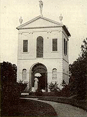
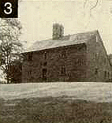
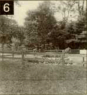
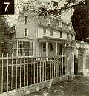
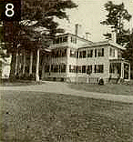
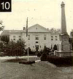
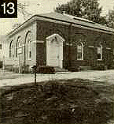

|
 The Danvers Preservation
Commission Presents Formerly Salem
Village |
Danvers | Some Important Events in the History of Danvers | Sites Accessible to the Public
Map of Danvers Area | Additional Places of Interest | Bibliography |Acknowledgements
|
Though 17 miles north of Boston, and partially bounded by the cities of Salem and Beverly, the town of Danvers with its 13 1/2 square mile area and 24,000 population still retains much of the hominess and architectural heritage of old New England. Known as Salem Village in the 17th century, there are still over a dozen houses in Danvers dating from that era, many associated with the witchcraft tragedy of 1692. Becoming independent from Salem in 1752, Danvers witnessed the development of various neighborhood villages, each having its era of prominence, and possessing a unique character. At the time of the Revolution, Danversport was a shipping and shipbuilding center where tidal mills prospered. Its local bricks became nationally famous, while the later leather tanning industry brought a diverse and colorful mixture of new immigrant labor to the area. Tapleyville emerged in the 1830s as a center for the production of woven carpets where English and Scottish weavers settled and made their homes. Danvers Plains took advantage of important crossroads and the introduction of the railroad in the 1840s to become the prominent commercial center. Putnamville and Danvers Highlands were noted for their important and early shoe manufacturing industry, while farms throughout Danvers became known far and wide for the Danvers half-long carrot, and the Danvers onion, still popular today. Though a number of Danvers' structures have been lost to fire and "progress," much of the town's period architecture still survives, and its written records have been preserved, making Danvers an important and accessible area for period study. |
| Seventeenth Century | ||
|---|---|---|
| Pre-1628 The Naumkeag Indians occupied various sites in Danvers, including Danversport and Northfields. | 1628 John Endecott, first Governor of the Massachusetts Bay Colony, with a company of about 100, arrives in Naumkeag (Salem). | 1632 John Endecott receives the first King's Grant of land (Orchard Farm) in present day Danversport. |
| 1638 Salem allows a group to settle in what becomes known as Salem Village, some 5 miles from the center of the town. | 1672 Salem Village is set off from Salem as a Parish with authority to hire a minister, build a meetinghouse, and gather taxes for public improvements. | 1689 "The Church of Christ at Salem Village" is organized with 27 parishioners, including Rev. Samuel Parris, signing the church covenant. |
| 1692 Girls in Salem Village begin the witchcraft delusion. |
| Eighteenth Century | ||
|---|---|---|
| 1708 The first school house is erected in order to teach village children "to read and write and cypher and everything that is good." | 1718 General Israel Putnam, future Revolutionary War hero, is born. | 1752 Danvers is established as a separate district from Salem. |
| 1757 "Said district of Danvers erected into a township" by order of the General Court. | 1759 Act creating the district of Danvers is disallowed ("The King Unwilling"). Danvers ignores the decree. | 1770 Town Meeting rules not to import, buy or use tea until the tax is removed. |
| 1774 Royal Governor Thomas Gage and British troops arrive from Boston in order to watch over radical activities in the area. | 1775 British troops arrive in Salem to capture rebel cannon stored there. Salem and Danvers militiamen give armed resistance and remove cannon to Danvers. | 1775 Seven Danvers men are killed, two wounded, one captured, responding to the Lexington Alarm. |
| 1775 Colonel Benedict Arnold and his troops encamp at Danvers on their march north to Quebec. | 1776 Town Meeting votes to support the Continental Congress in its bid for independence "with our lives and fortunes." | 1777 Zerubbalel Porter establishes the first shoe factory to export outside the country. |
| 1778 Dr. Samuel Holten, member of the Continental Congress, signs the Articles of Confederation. | 1785 Dr. Holten is appointed President of the Continental Congress. | 1787 Fourteen residents embark from Danvers to the Ohio territory and found Marietta, Ohio. |
| 1794 The Danvers Social Library is organized to lend out books. | 1795 George Peabody, future philanthropist, is born in the South Parish, now Peabody. | 1799 First U.S. patent issued to Nathan Read for a nail cutting machine. |
| Nineteenth Century | ||
|---|---|---|
| 1800 Danvers begins its first fire department with two hand-operated pumpers. | 1831 General Grenville Dodge, builder of the Union Pacific Railroad, is born in Putnamville. | 1832 Samuel Preston invents a shoe pegging machine. |
| 1838 The Young Men's Anti-Slavery Society is formed. | 1845 The first town newspaper, Danvers Courier, is founded. | 1845 The Great Danvers Fire destroys 18 buildings in Danvers Square. |
| 1855 South Danvers is set off and incorporated. It is later renamed Peabody. | 1869 The Peabody Institute Library is dedicated. Its benefactor, George Peabody, attends. | 1870 Civil War monument in honor of 95 Danvers men who lost their lives is dedicated at Town Hall. |
| 1875 Famed poet John G. Whittier comes to live in Danvers. | 1878 Danvers Lunatic Hospital opens. | 1880 First wires from Salem bring the telephone to Danvers. |
| 1884 First horse trolleys from Salem. | 1889 Danvers is the first town in the Commonwealth to establish municipal lighting. | 1889 The Danvers Historical Society is organized by Rev. Alfred Putnam. |
| Twentieth Century | ||
|---|---|---|
| 1907 St. John's Preparatory School opens at the former Spring Estate. | 1913 The Essex Agricultural School is established on site of former Massey estate. | 1930 Danvers adopts representative form of Town Meeting. |
| 1959 "Oak Knoll," John Greenleaf Whittier's home for 16 years, is razed to make way for a housing development. | 1963 The Danvers Historical Society and the Town of Danvers jointly cooperate in purchasing the Endicott estate which is developed for conservation, preservation and recreation. | 1964 Town Meeting establishes the Danvers Historical Commission (now the Preservation Commission). |
| 1972 The Danvers Archival Center is established. | 1974 The Salem Village Historic District is created by Town Meeting. |
Sites Accessible to the Public |
||
|---|---|---|
| Endecott Pear Tree ca 1632. Rear 100 Endicott Street. John Endecott, first Governor of the Massachusetts Bay Colony, lived here at his "Orchard Farm," and planted this pear tree as part of the first cultivated nursery in the New World. A protective fence surrounds the tree today. It remains as a living link between the present generation and that of our founding fathers. |  |
|
| Putnam House ca 1648. 431 Maple Street. Joseph Putnam, uncle of one of the "bewitched girls," lived here in 1692. One of the few to decry witch trials, he kept pistols loaded and horses ready should he be accused. Maj. Gen. Israel Putnam, American commander Bunker Hill was born here in 1718. "Old Put" was famous for his command, "Don't fire 'til you see the whites of their eyes." The house, now owned by the Danvers Historical Society, includes a prominent 18th century gambrel roofed addition. |  |
|
| Nurse Homestead ca 1678. 149 Pine Street. Originally owned in 1636 by Townsend Bishop, this land was occupied by Francis Nurse, whose wife, Rebecca, was accused of witchcraft in April of 1692 and was executed the following July. The homestead is today owned by the Danvers Alarm List Company, and is a superb example of a Colonial farmstead. Close by is the family burial ground including the grave of witchcraft victim George Jacobs, as well as the monument to Rebecca bearing a poetic epitaph written by John Greenleaf Whittier. On the homestead grounds is a replica of the 1672 Village Meeting House which features a sound and light program. Also on the property is the frame of the ca-1681 Zerubabel Endecott house. Days of operation: June 15 Labor Day, Wednesday through Sunday, 11 a.m. 4:30 p.m. Labor day October 31, Saturday and Sunday, 10 a.m. 4:30 a.m. Admission price: Adults: $5; Children 16 and under: $3; members of the Nurse Homestead Preservation Society: Free. |  | |
| Village Training Field. Centre Street at Ingersoll Street. Beginning in 1671, the men of Salem Village performed military drills here. In 1709 Nathaniel Ingersoll willed the field as a "training place forever." On April 19, 1775, many of the Danvers Minutemen traveled from here to the Lexington Alarm, suffering heavy casualties. A memorial off Ingersoll Street dedicated in 1976 lists the names of 19 Danversites who gave their lives during the War for Independence. Several other markers are also located on this town park. |  |
|
| Samuel Holten House 1670. 177 Holten Street. A wonderful example of chronological house development, this was the 1692 home of Sarah Holten, who gave damaging testimony against Rebecca Nurse during the witch hysteria. Here, during the revolutionary period, lived Judge Samuel Holten - physician and statesman. A member and President of the Continental Congress, he helped frame the Articles of Confederation and was a member of the early U.S. Congress. The home is now owned by the Daughters of the American Revolution. Open by appointment. (978) 777-6084. |  |
|
| Salem Village Parsonage 1681. Rear 67 Centre Street. Accessible by a cart path, this archaeological site is the famous parsonage of Salem Village, the focal point of the witchcraft delusion of 1692. Here lived the Rev. Samuel Parris family. The Parris slave Tituba was one of the first accused of witchcraft and her confession helped lead to the accusation of dozens of others. Also living here at an earlier time was Rev. George Burroughs, hanged as a witch during 1692. The house was torn down in 1784 and excavated beginning in 1970. Today this town park includes original foundation walls and interpretive signs. |  | |
| Page House 1754. 11 Page Street. This Georgian style gambrel roof structure was built by Jeremiah Page, early Danvers brickmaker. Between June and September 1774, Gen. Thomas Gage, Commander of British forces in North America and Royal Governor of the colony, used the left, front room as his Royal Office. Jeremiah Page was a captain of the town's militia, and in April 1775 led his men in violent conflict with the retreating British. The house is owned by the Danvers Historical Society. Open by appointment. (978) 777-1666. |  | |
| Glen Magna ca 1790. Off Ingersoll Street. This house, first occupied by Jonathan Ingersoll in the 1790s, was bought in 1814 by Cpt. Joseph Peabody for an estate to hide his cargoes from British capture. William C. Endicott, Jr., son of the Secretary of War under Cleveland, transformed the home into a stylish Georgian Revival country mansion in the 1890s. The gardens were laid out by Frederick Law Olmsted and Joseph Chamberlain. The central 11 acres owned by the Historical Society are surrounded by the 140 acre town owned Endicott Estate which include farm buildings, parks, a playground and walking trails. Open Tuesday and Thursday, 10:00 a.m.-4:00 p.m., June to September. |  | |
| Derby Summer House 1794. On Glen Magna Grounds. Samuel McIntire designed this ornate Federal style garden house for Elias Hasket Derby. It was moved here in 1901. The two-and-a-half story structure is decorated with pilasters, swags, and Grecian urns, and is topped with carvings of a farmer and a milkmaid. The arched door leads to a delightful walled rose garden designed by Herbert Browne. |  |
|
| Town Hall 1855. Sylvan & Holten Streets. The seat of local government, the original central portion of this building was built in the Greek Revival style. It was originally both Town House and High School. On the foyer wall are three WPA murals depicting Danvers' pioneering spirit, civic involvement, and economic growth. In 1930 Danvers adopted the representative form of Town Meeting and in 1949 the Town Manager Act. On the front lawn of Town Hall are memorials to those Danversites who sacrificed their lives during the Civil War, World War I, World War II, the Korean War and Vietnam War. Monday to Friday 8:00 a.m.-5:00 p.m. (978) 777-0001. |  | |
| Peabody Institute Library 1892. 15 Sylvan Street. The Danvers Library was the result of funds given by native son George Peabody, internationally acclaimed banker and philanthropist. The original building burned and was replaced in 1892 by the present classic Georgian Revival structure. This building, with its fine collection and facilities, is the cultural center of Danvers. Open Monday to Thursday 9:00 a.m.-9:00 p.m., Friday 1:00-5:00 p.m., Saturday 9:00 a.m.-5:00 p.m., and Sunday 1:00-5:00 p.m. October to May. (978) 774-0554. |  |
|
| Danvers Archival Center (Within Peabody Institute Library). A unique venture of pooling of community resources, the Archival Center has perhaps the most varied and extensive collection of manuscript, printed, and photographic material relating to an individual community in New England. Here resides collections of public, church and private records including the Historical Society manuscript collection , preserved and available to researchers. Also located here is the Brehaut Witchcraft Collection, the largest collection of imprints relating to the 1692 Salem Village Witchcraft. Open Monday 1:00-7:30 p.m.; Wednesday & Thursday 9:00 a.m.-12:00 p.m. and 1:00 p.m.-5 p.m.; 2nd & 4th Friday 1:00-5:00 p.m.; 1st Saturday 1:00- 5:00 p.m. (978) 774-0554. |  |
|
| Tapley Memorial Hall 1930. 13 Page Street. The headquarters of the Danvers Historical Society, the hall houses numerous objects relating to the history of Salem Village and Danvers. The Society pursues an active program of interpretation and preservation and has various ongoing exhibits throughout the year. New members are welcome. Open Monday to Friday 9:00 a.m.-2:00 p.m. (978) 777-1666. |  | |
| Witchcraft Victims' Memorial 1992. 176 Hobart Street. This memorial is in memory of the 25 people who died as a result of the 1692 Salem Village witchcraft hysteria. It sits on town land directly opposite from the site of the Salem Village Meeting House where many of the witchcraft examinations took place. Of local design and featuring puritan symbols, the monument was dedicated in 1992 and includes the names of those who died, as well as heroic statements of eight who were executed. |  |
|

Hutchinson House (ca 1726), 181 Centre Street. Structurally similar to houses built a generation earlier, this is the birthplace of Col. Israel Hutchinson. A lieutenant at Wolfe's capture of Quebec, Hutchinson led a company at the Lexington Alarm and, in 1776, his 27th Regiment saved Washington's troops from destruction by the British at Long Island by ferrying the army across the river.
Putnam Burial Ground, 485 Maple Street. Here are buried beneath an unmarked burial mound Ann Putnam and her parents, Ann and Thomas, all of whom played key roles in the witchcraft hysteria.
Upton Tavern (ca 1710), 95 Centre Street. On the second floor of the structure is a ballroom having a curved ceiling with delicately carved border.
Wadsworth House (1784), 73 Centre Street. A square-hipped roof dwelling of Georgian design, this building was built by prominent minister and patriot Rev. Benjamin Wadsworth.
Ingersoll Ordinary, 199 Hobart Street. The earliest portion of house dates to the 17th century occupation of Deacon Nathaniel Ingersoll, yeoman and innkeeper. It is on this spot that many accused witches were examined in 1692.
Hutchinson-Kimball House (ca 1700), 84 Forest Street. A fine example of "First Period" architecture.
Danvers State Hospital, 450 Maple Street. This massive and impressive complex was designed for the care of the mentally ill. The Victorian Gothic Kirkbride complex on the crest of the hill was built between 1874-1877 under the direction of architect Nathaniel Bradlee.
Watch House Hill, 41 Centre Street. On this site was erected a fortified house to keep watch for possible Indian attack. In 1700 the village church was erected here, as were subsequent churches, and here Ann Putnam, chief witch accuser, made a plea for forgiveness.
Haines House (1681), 35 Centre Street. Thomas Haines, innkeeper, lived here during the witchcraft outbreak and gave testimony which helped send Elizabeth How of Topsfield to the gallows.
John Holten House (ca 1692), 27 Centre Street. Attached to the right of the house is a structure called a Beverly Projection.
Joseph Holten House (ca 1670), 19 Centre Street. During the King Philip War Holten was wounded at the Narragansett fight.
Holten Burial Ground, 131 Holten Street. Here lie the remains of Dr. Samuel Holten who died in 1816.
Osburn House (ca 1680), 273 Maple Street. Moved to this site in 1914. Here in this house lived sickly Sarah Osburn, one of the first three accused of being a witch in 1692. Although professing her innocence, she was thrown into jail where she died a few months later, becoming the first victim of the delusion.
Wadsworth Burial Ground, 18 Summer Street. Here lie the remains of the early settlers of Salem Village dating from the 1640s. Literally hundreds of settlers are buried in unmarked graves, including early ministers and their families as well as persons killed by Indians. The superb stone of Elizabeth Parris with a poetic epitaph by Samuel Parris is also here with other ancient stones.
Putnam-Perry House (ca 1685), 42 Summer Street. The birthplace of the Loyalist lawyer, James Putnam, this house was later the part-time residence of Timothy Pickering, Secretary of State under Washington.
Daniel Rea House (ca.1660), 4 Elerton Lane. An early settler to the area lived in this house, which exhibits a rare plaster coving below the front roof.
Octagon House (1848), 148 Locust Street. This cement clad house with its octagon shape was a mid-19th century American inspired architectural design.
Arnold Plaque, 1 Conant Street. This plaque commemorates the encampment of General Arnold's forces in Danvers while on their way to capture Quebec. Many Danversites took part in this valiant but vain expedition.
Fellows-Masury House (1845), 48 Elm Street. This house was owned by shoe manufacturer and prominent abolitionist Alfred Fellows. Visitors included Frederick Douglass, Lloyd Garrison, and Harriet Beecher Stowe, among others. At a later date Presidents Roosevelt, Taft, and Coolidge were among other famous guests.
Joshua Silvester House (1858), 11 Peabody Avenue. This Mansard style house was one of the first in the United States built of Portland cement. An octagon shaped stable is attached.
High Street Burial Ground, 45 High Street. Here are buried many local Revolutionary War heroes, including Col. Jeremiah Page, Col. Israel Hutchinson, and Nathan Putnam who was severely wounded in the Lexington Alarm.
Fowler House (1810), 166 High Street. A country Federal style brick house, this was the residence of Danversport mill and tannery owner Samuel Fowler, Jr.
Endecott Burial Ground, beyond end of Clinton Avenue. This ground was originally used as a campsite by the Naumkeag Indians, and it has been used as a graveyard from the 1650s. Many of those buried here were relatives of Governor Endecott; and between the pines lie the unmarked graves of two British soldiers who died while stationed in Danvers.
First Baptist Church (1848), 3 Water Street. Built in the Greek Revival style, this is the oldest surviving Danvers Church structure.
Col. Hutchinson Memorial, 33 Water Street. The site of Hutchinson's home, it was here that the bodies of Danvers' dead were brought after the Lexington Alarm.
Riverbank (1853), 154 Water Street. This extensive red brick Italianate structure with prominent roof cupola was occupied at the turn of the century by William Penn Hussey, a genuine character of controversial fame. An equestrian statue of Hussey as Chief Marshall of the 1902 Danvers Celebration stands across Water Street from the house.
School Houses, 224 Locust & 81 Water Street. Two fine examples of 19th century one-room school houses.
Grave of Ruben Kennison, 128 Elliott Street. Minuteman Kennison was killed during the British retreat from Lexington and brought home for burial.